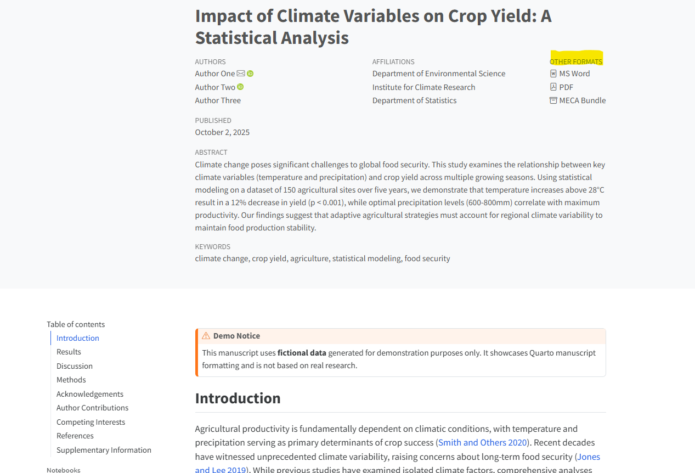

From RStudio to Published Paper: Writing Manuscripts with Quarto
Why Write Papers in RStudio?
If you’re a researcher using R and RStudio, you probably spend hours there every day: cleaning data, running analyses, creating visualizations, and building statistical models.
But then comes the hard part: writing the actual paper.
Suddenly, you’re juggling
- Exporting figures to PNG files
- Copy-pasting results into Word
- Managing citations in Zotero or Mendeley
- Updating figures when your data changes (again!)
- Dealing with formatting chaos before journal submission
What if you could skip all of that?
With Quarto, your entire manuscript lives in RStudio alongside your code. When you update your analysis, your paper updates too—automatically. No more switching between tools. No more broken workflows.
What is Quarto, Exactly?
Think of Quarto as the next generation of R Markdown, but supercharged:
✅ Works with R, Python, Julia, and Observable
✅ Creates Word docs, PDFs, HTML pages, and even journal-ready formats
✅ Handles citations, cross-references, and figure numbering automatically
✅ Already built into modern versions of RStudio (no extra installation needed!)
It’s designed for exactly what you’re trying to do: turn your research into a publication-ready document.
New to R Markdown? Don’t worry! Quarto is beginner-friendly. If you can write in Word and copy-paste code, you can write with Quarto.
Getting Started: Create Your First Manuscript Project
Let’s create a manuscript project in RStudio. It takes about 30 seconds:
Step 1: Create a New Quarto Manuscript
- In RStudio, go to: File → New Project
- Choose: New Directory → Quarto Manuscript
- Name your project (e.g.,
my-paper) - Click Create Project
RStudio creates a complete manuscript structure for you:
my-paper/
├── index.qmd # Your main manuscript file (text + code)
├── references.bib # Bibliography file (citations go here)
├── _quarto.yml # Project settings (formats, styles, etc.)
└── my-paper.Rproj # RStudio project fileStep 2: Explore the Template
Open index.qmd and click Render. You’ll see a beautifully formatted manuscript with:
- Title and author information
- Sections (Introduction, Methods, Results, etc.)
- Example code chunks
- Auto-generated bibliography
That’s it! You now have a working manuscript template.
I’ve created a ready-to-use template with a demo research paper example (including plots, tables, and references).
Download: quarto-manuscript-demo on GitHub
Just download, open in RStudio, and click Render. Follow the README for required instructions.
Writing Your Manuscript: The Basics
The index.qmd file is where your paper lives. Here’s what a simple manuscript looks like:
---
title: "Impact of Exercise on Sleep Quality"
author: "Your Name"
date: "2025-10-03"
format:
html: default
docx: default
pdf: default
bibliography: references.bib
---
## Abstract
We investigated the relationship between exercise frequency and sleep quality in 200 participants over 12 weeks.
## Introduction
Sleep disorders affect millions of people worldwide [@smith2020].
Recent evidence suggests physical activity may improve sleep outcomes...
## Methods
### Data Collection
We recruited participants aged 25-65 and tracked their exercise habits using wearable devices.
::: {.cell}
:::
## Results
As shown in Figure 1, we found a positive correlation between exercise and sleep quality (r = 0.45, p < 0.001).
## ReferencesKey Features to Notice:
- YAML Header (the
---section at top): Contains your paper’s metadata - Markdown Sections: Use
##for main sections,###for subsections - Code Chunks: Wrapped in
```{r} ... ```— runs when you render - Citations: Use
[@smith2020]to cite references from your.bibfile - Figure Labels:
#| label: fig-namecreates numbered, cross-referenceable figures
Tip: Use echo: false in code chunks to hide the code and show only the output. Perfect for final manuscripts!
Managing References: Easier Than You Think
One of the biggest pain points in academic writing is citation management. Quarto makes it surprisingly simple.
How It Works
- Create a
.bibfile (already done if you used the template!) - Add references in BibTeX format
- Cite them in your text using
[@citationkey] - Render → Quarto generates a formatted bibliography automatically
Example BibTeX Entry
In references.bib:
@article{smith2020,
title={The Science of Sleep and Exercise},
author={Smith, Jane and Johnson, Mark},
journal={Journal of Health Research},
year={2020},
volume={15},
pages={234-245}
}In your manuscript:
Recent research shows strong correlations [@smith2020].Result: “Recent research shows strong correlations (Smith & Johnson, 2020).”
Changing Citation Styles
Want APA? MLA? Nature? Just add one line to your YAML:
csl: apa.cslDownload any citation style from Zotero’s style repository(16,000+ styles available!).
Here’s how I build my .bib files in under 5 minutes:
- Install Zotero desktop app (free reference manager)
- Install Zotero browser connector to save papers with one click
- While browsing a paper online, click the Zotero extension → automatically saved!
- Export your library as BibTeX:
- Right-click your library → Export Library → Choose “BibTeX (.bib)”
- Save as
references.bibin your manuscript folder
Done! Quarto will read it automatically. No manual typing of citations needed.
Why Zotero? It’s free, cross-platform, syncs across devices, and integrates beautifully with Quarto, Word, and LaTeX.
Rendering Your Paper: One Click, Three Formats
The magic moment: turning your manuscript into a finished document.
How to Render
Option 1: Click the Render button in RStudio (top of editor)
Option 2: Run in terminal: quarto render
What You Get
After rendering, check your project folder. You’ll find:
_manuscript/
├── index.html # Beautiful HTML version
├── index.docx # Microsoft Word document
├── index.pdf # Professional PDF
└── index_files/ # Supporting files (figures, etc.)All three formats generated from the exact same source file.
Viewing Your Outputs
Open index.html in a browser. In the top-right corner, you’ll see an “Other Formats” section:

This means:
- 🌐 HTML for sharing online (blogs, lab websites)
- 📄 Word for co-authors and supervisors who prefer track changes
- 📕 PDF for journal submissions
The Real Benefits
Let me tell you why researchers who switch to Quarto never go back:
1. Everything Lives in One Place
No more: “Wait, which version of Figure 3 did I send to my co-author?”
Your code, analysis, figures, text, and references are all in one file.
2. Automatic Updates
Changed your data? Re-run the analysis. Render again. Every figure, table, and statistic updates instantly.
3. Perfect for Collaboration
- Send collaborators the Word file for comments
- Keep the
.qmdsource as your master version - Incorporate feedback and re-render
4. Reproducibility by Default
Other researchers can download your project, run quarto render, and recreate your entire paper—figures, tables, statistics, everything.
5. Future-Proof
Quarto is plain text. It’ll open in 20 years. Try opening a Word 2003 .doc file today. Good luck. ==> Quarto’s use of plain text makes it future-proof, unlike closed, proprietary formats that may become obsolete.
6. Journal-Ready Formats
Quarto can output to:
- JATS XML (for journal submissions)
- LaTeX (for traditional publishers)
- Jupyter notebooks (for teaching)
Real-World Example: What You Can Build
Here’s what a complete Quarto manuscript looks like in practice:
- Title & Authors with affiliations and ORCID IDs
- Abstract with keywords
- Introduction with citations
- Methods section with inline code showing your analysis
- Results with auto-numbered figures and tables
- Discussion interpreting findings
- References automatically formatted in your chosen style
- Supplementary Materials (appendices, extra figures)
All of this renders to professional HTML, Word, and PDF formats.
See it in action: Download my complete example manuscript to explore the full structure.
Getting Started Checklist
Ready to write your next paper in RStudio? Here’s your roadmap:
Stuck or want to learn more?
Check out the official Quarto documentation, it’s excellent and beginner-friendly!
Final Thoughts
Most researchers already live in RStudio for their analysis. Why not stay there for writing too?
With Quarto Manuscript, you can:
- Write your paper where your code lives
- Update figures and results automatically
- Manage citations effortlessly
- Export to any format your journal requires
- Make your research fully reproducible
The best part? Once you set it up, writing becomes easier. No more juggling tools. No more version control nightmares. Just research, writing, and results: all in one place.
Start small: take one section of your current paper and try writing it in Quarto. You’ll immediately see why this approach is the future of academic writing.
Thanks for reading! If you found this helpful, download the demo template and give it a try. Feel free to reach out if you have questions, happy to help!